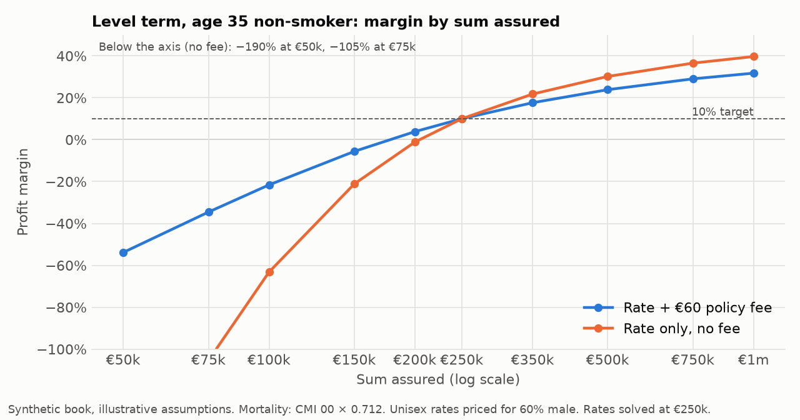
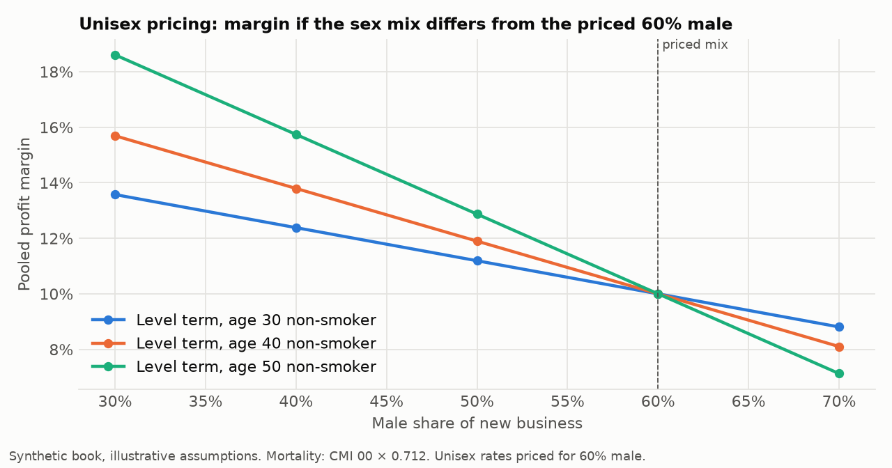
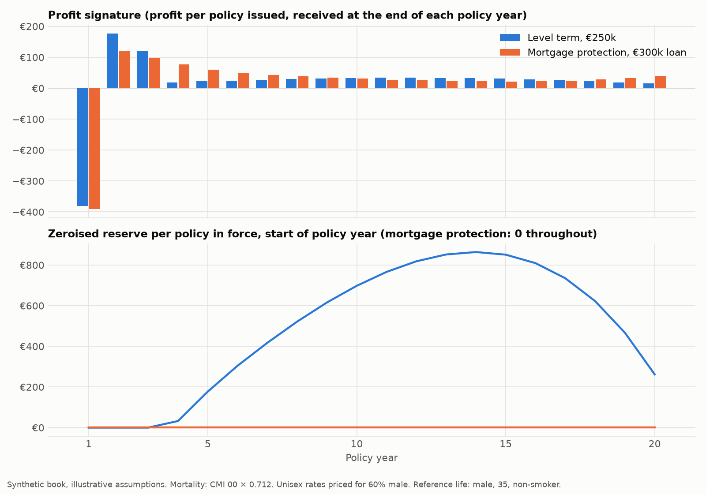
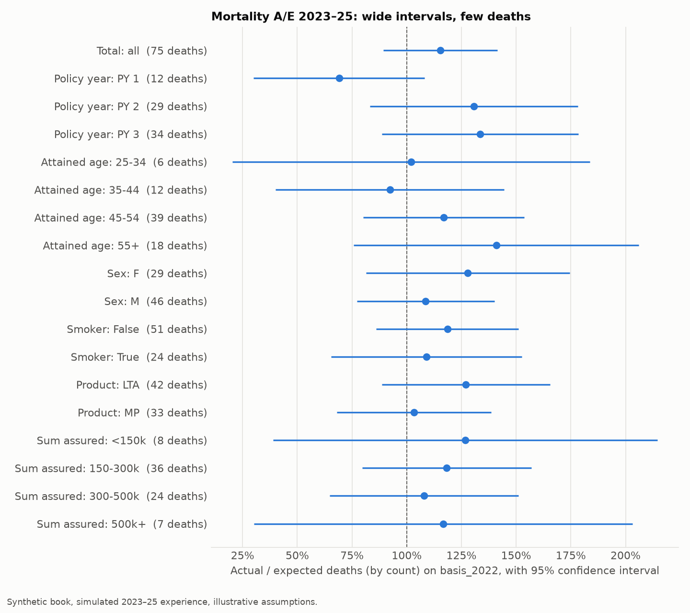
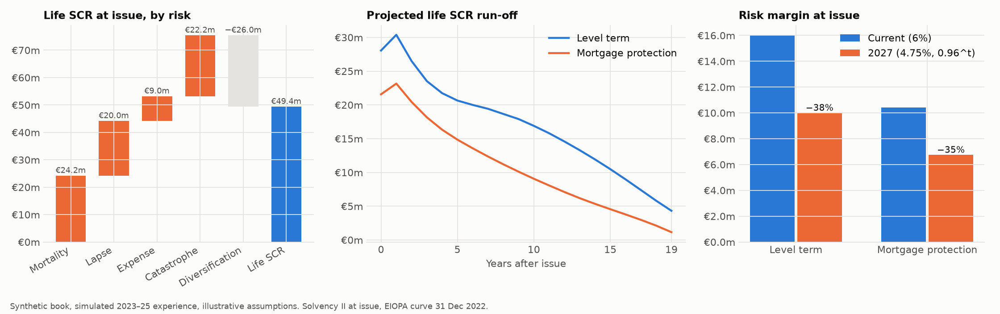

Life actuarial project · Tom Zhang · Python, Excel
Life Protection Model
How should an Irish life insurer price a term-assurance book, monitor emerging mortality and lapse experience, and translate assumption changes into profitability, IFRS 17 earnings and Solvency II capital?
One cash-flow engine follows 50,000 level-term and mortgage-protection policies issued on 1 January 2023 through three years of a life team's work: price, value under Solvency II and IFRS 17, study the experience, update the assumptions, and explain every movement.
Synthetic book, illustrative assumptions. Real inputs: CMI 00 mortality tables, CSO Irish life tables, EIOPA risk-free curves 2022–2025, six bonkers.ie quotes. Simulated: the policies and the 2023–25 experience. Lapse, expense and commission assumptions are illustrative.
What the model found
Six results, each traceable to a table or test in the repository.
EU law bars sex-based premiums, so rates assume 60% male business. A 35-year-old man earns about 4% at that price; at 70% male a 50-year-old cell earns 7.1%.
The €60 fee cannot cover fixed costs; break-even is near €177k and a fee of about €150 would be needed. These small, young cells are the only IFRS 17 onerous groups.
75 deaths, A/E 115% (95% CI 89%–141%): mortality moves only +4%. Lapses, A/E 121% ±2%, are adopted in full; brokers run at 133%.
At end-2025 the new basis raises BEL by €6.7m and cuts the CSM by €6.1m; premiums cover 96.6% of the new need, so 2026 rates rise 2–8%.
€25.6m → €16.3m at issue; day-one own funds €23.7m → €33.0m. Mortgage protection gains less because its capital runs off faster.
A live-formula Excel model agrees with Python to about 1e-12; golden values and 60 tests cover every stage, and every walk reconciles.
One engine, five lenses
Pricing
What should each cell pay, and where does the profit come from?
Unisex rates per €1,000 solve a 10% profit margin at an 8% risk discount rate, with prudent zeroised reserves. The first year loses money (commission of a full year's premium plus acquisition costs), which is why early lapses hurt.
| Rate per €1,000 (non-smoker / smoker) | Age 25 | 35 | 45 | 55 |
|---|---|---|---|---|
| Level term | 0.72 / 0.94 | 1.04 / 1.69 | 2.22 / 4.49 | 6.15 / 12.94 |
| Mortgage protection | 0.54 / 0.68 | 0.71 / 1.00 | 1.24 / 2.31 | 3.12 / 6.69 |



Experience study
Were the pricing assumptions right, and how much should we believe three years of data?
Deaths and lapses for 2023–25 are simulated from a hidden truth (mortality 110%, lapses 120% with a broker skew). The study sees only the data and the pricing basis, and is tested never to read the truth.


| Assumption review at 31 Dec 2025 | Evidence | Credibility | Change |
|---|---|---|---|
| Mortality | A/E 115.4% (CI 89%–141%) | 0.26 | × 1.040 |
| Lapse | A/E 120.6% (CI 118.5%–122.7%) | 1.00 | × 1.206, all durations (judgement) |
| Maintenance expense | Company accounts: 106% of assumed | — | €60 → €63.60 |
| Channel | Broker 132.8%, direct 92.7% | — | Pricing recommendation only |
Solvency II
How much liability and capital does the book need, and what does the 2027 reform change?

| At issue, €m | BEL | Life SCR | RM current | RM 2027 | Day-1 own funds |
|---|---|---|---|---|---|
| Level term | −31.5 | 28.1 | 16.0 | 10.0 (−38%) | 15.5 → 21.5 |
| Mortgage protection | −17.8 | 21.6 | 10.4 | 6.7 (−35%) | 7.4 → 11.1 |
| Total | −49.3 | 49.4 | 25.6 | 16.3 (−36%) | 23.7 → 33.0 |
The 2027 rule (cost of capital 4.75%, weights max(0.96t, 0.5), Delegated Regulation (EU) 2026/269) gives RMnew/RMold = 19/24 × the discounted-SCR-weighted average weight, so the cut must lie between 21% and 60%; the model's ratio matches this identity exactly.
IFRS 17
When is the profit recognised, and which contracts are loss-making from day one?

- CSM at issue €50.8m, RA €6.9m (Monte Carlo, 75th percentile), BE −€57.7m.
- Onerous groups: only small-cover (< €150k), young cells — €0.04m loss component.
- Sex is not split: IFRS 17 para 20 allows contracts that differ only because law constrains pricing to share a group.
- RA method matters: a 6% cost-of-capital RA would be €26.6m, beyond every simulated scenario, because it charges for mass lapse and catastrophe that the Monte Carlo does not model.
- Premiums could fall 19% before the profitable groups lost all their CSM.
Analysis of change and the assumption review
Why did the numbers move each year — bad luck, a wrong basis, or interest rates?


Validation
How do we know the numbers are right?
- Golden values from an independent implementation: premiums, in-force, values, reserves, profit vectors, NPV, IRR, stress losses, SCR, BEL, risk margin, CSM, coverage units and the Monte Carlo RA.
- Excel: a single policy rebuilt in live formulas, for the test basis and the real basis, evaluated formula by formula in the tests; largest difference ≈ 1e-12. Download the workbook.
- Identities: forward PV = backward V₀; in-force conservation; every BEL, RA and CSM walk reconciles to the closing value; RM ratio equals its closed form; Σ CSM releases = CSM₀ + accretion; zero shocks give zero capital.
- Experience study: with truth equal to the basis, A/E falls inside its 95% interval in at least 17 of 20 seeds.
- 60 automated tests; every output rebuilds with one command.
Limitations
What the model can and cannot say.
- Synthetic book and simulated experience; lapse, expense and commission assumptions are illustrative.
- CMI 00 is UK insured-lives experience from 1999–2002; its level for 2023 is a documented judgement, not Irish insurer data.
- Life-underwriting SCR only: no assets, market, counterparty or operational risk, no tax — not a full solvency ratio.
- Monte Carlo RA covers level uncertainty only; group RAs are summed without diversification.
- IFRS 17 measurement and CSM roll-forward, not full financial statements; one annual cohort; annual time steps.